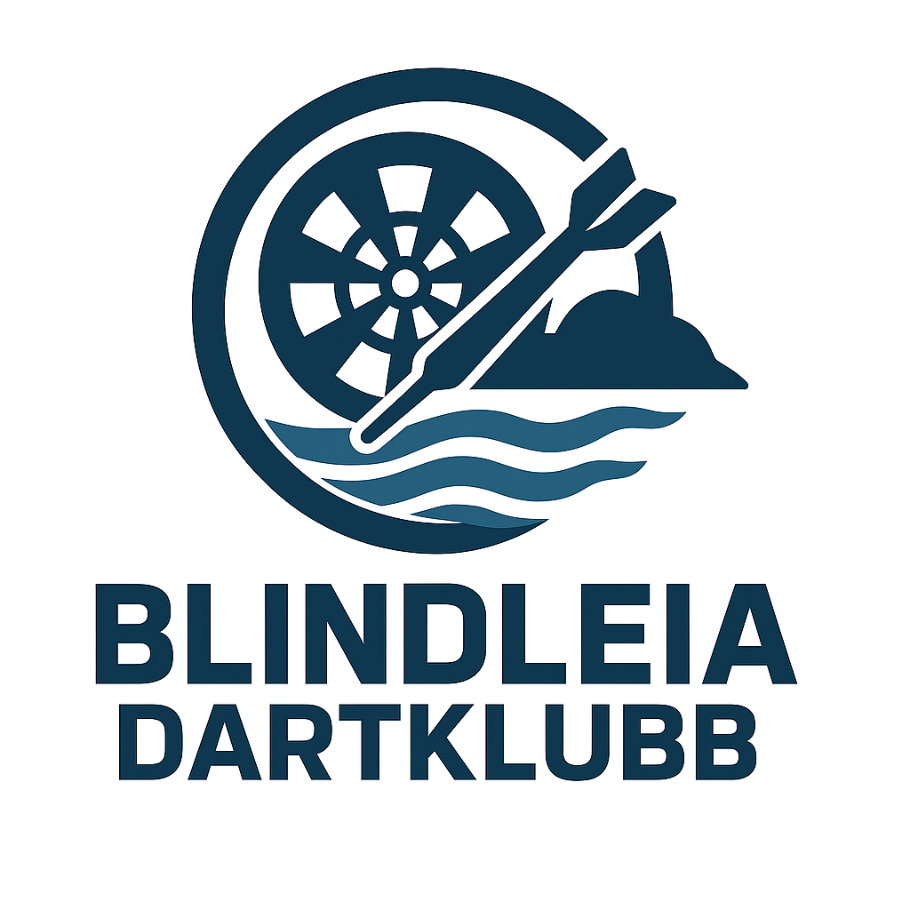

Klubbdrift, spillerportal og kiosk i samme løsning.
Samlet lokal runtime for admin, spillerpåmelding, kiosk og venueskjerm med tydelig klubbskille i bunnen.
Testmiljøet er organisert som en lokal turneringsplattform med tydelig skille mellom admin/backoffice, spillerportal, kiosk og skjerm.
Spillerportal
Mobilvennlig påmelding, egne tall, ranking og turneringsoversikt for spillere og medlemmer.
Admin Studio
Klubbvalg, administratorinnlogging, spilleroversikt, turneringsstyring, kamper og kioskoppsett.
Kiosk
Board-side flyt for assigned matches, start av kamp, sum/per pil, undo og manuell eller Scolia-klargjort scoring.
Venue Screen
Live oversikt over kiosker, aktive turneringer og siste kamper for valgt klubb.
API
Intern API-first runtime for admin, spillerportal, kiosk, screen og senere connector-publishing.